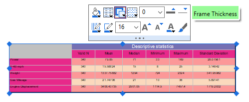

Arbeitsblätter in Diagrammen (und Layouts) einfügen
Graph-InsertWks
Früher mussten Sie beim Einfügen des Arbeitsblatts die Größe des eingefügten Objekts ändern, um das Arbeitsblatt anzuzeigen. Außerdem wurden jegliche leere Zeilen unter dem Blatt eingefügt und konnten nur verborgen werden, indem die Größe des eingefügten Objekts vorsichtig angepasst wurde. Die Funktion Arbeitsblatt einfügen wurde in Origin 2023 verbessert.
Um ein vorhandenes Arbeitsblatt zum aktiven Diagramm oder zur Layoutseite hinzuzufügen:
- Wählen Sie im Menü Einfügen: Arbeitsblatt oder klicken Sie auf die Schaltfläche Arbeitsblatt einfügen
 (Symbolleiste Hilfsmittel, geteilte Schaltfläche mit Diagramm einfügen
(Symbolleiste Hilfsmittel, geteilte Schaltfläche mit Diagramm einfügen  ). Nur auf der Layoutseite können Sie zusätzlich mit der rechten Maustaste klicken und Arbeitsblatt hinzufügen wählen.
). Nur auf der Layoutseite können Sie zusätzlich mit der rechten Maustaste klicken und Arbeitsblatt hinzufügen wählen.
- Wählen Sie ein Arbeitsblatt im Blattbrowser aus. Beachten Sie, dass das zuletzt aktive Arbeitsblatt in der Browserliste mit fetter Schrift angezeigt wird. Klicken Sie zum Einfügen auf OK. (In Versionen vor 2023 müssen Sie das Arbeitsblatt mit der Maus aufziehen, wenn es eingefügt wurde.)
-
- Skalieren Sie das Arbeitsblatt nach Bedarf mit Hilfe der blauen Auswahlelemente neu.
-
Zusätzliche Hinweise:
- Um die Quelle eines eingefügten Arbeitsblatt zu identifizieren, wählen Sie es im Diagramm oder im Layout aus und sehen Sie sich die untere linke Ecke der Statusleiste an, gleich rechts neben dem Hilfsmittel Suche.
- Per Standard werden eingefügte Arbeitsblatt an den Layerrahmen angehängt.
Eingefügte Tabellen formatieren
Weitere Verbesserungen wurden an der Arbeitsblattformatierung vorgenommen: Seit Version 2023 ist auf der Minisymbolleiste eine Schaltfläche Vereinte Zeilen auf Seitenebene vorhanden, mit der die Zeilenfarbe zwischen zwei vom Anwender gewählten Farben abwechselnd angewendet werden kann.
Außerdem ruft das Auswählen eines eingefügten Arbeitsblatts eine Minisymbolleiste hervor, die über Schaltflächen zum schnellen Modifizieren der Zellenfüllfarbe, der Rahmendicke, der Gitternetzlinie etc. verfügt.
-
- 
 |
Beachten Sie, dass Sie, sobald Sie das Arbeitsblatt eingefügt haben, Änderungen am Original machen können. Um diese Änderungen jedoch für das eingefügte Blatt zu übernehmen, müssen Sie auf die Schaltfläche Über Arbeitsblatt aktualisieren auf der Minisymbolleiste des eingefügten Blatt klicken.
|
Leere Tabellenobjekte einfügen
Auch wenn die obige Methode vorzuziehen ist, besonders seit Version 2023, können Sie auch ein leeres Tabellenobjekt in Diagramme und Layoutfenster einfügen und bearbeiten, um Daten, Formatierung etc. hinzuzufügen.